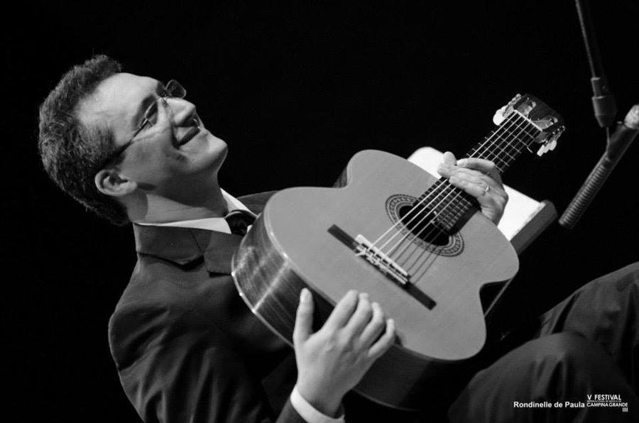
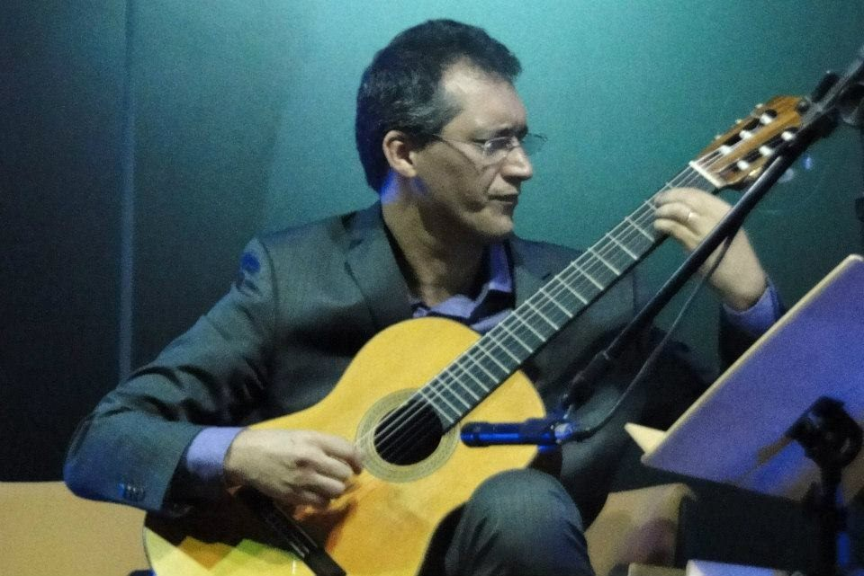

Marcelo Fernandes
Classical guitarist, composer and professor of music at the Federal University of Mato Grosso do Sul (UFMS). He studied for three years in Uruguay with Abel Carlevaro.
He holds a doctorate in music (2011), a master’s in arts (2003) and a bachelor’s in guitar (1999), all from the University of São Paulo. His doctoral research was on modernism in the guitar music of Camargo Guarnieri, music he also plays in concert.
On SESC’s Sonora Brasil tour he gave 86 guitar recitals in 20 Brazilian states. Abroad he has played in France, Spain, Switzerland, Germany, Belgium, Portugal, Paraguay, Colombia, Bolivia and the United States.
He writes much of what the duo plays: songs on poems by Delasnieve Daspet, Raquel Naveira, Rubênio Marcelo and Carlos Nejar. He also wrote the UFMS anthem and founded the Camerata Madeiras Dedilhadas, the university’s plucked-string ensemble.

CV
Marcelo Fernandes Pereira. The official, complete version is on Lattes, the Brazilian academic CV platform.
Education
All degrees from the University of São Paulo.
-
2011 · Doctorate
Doctorate in Music
Thesis on modernism in Camargo Guarnieri’s guitar music.
-
2003 · Master’s
Master’s in Arts
University of São Paulo.
-
1999 · Bachelor’s
Bachelor’s in Music, guitar
University of São Paulo.
Teachers
-
Uruguay
Abel Carlevaro
Three years of study with the Uruguayan guitarist.
-
USP
Edelton Gloeden
-
USP
Edna Baldassi
Competition prizes
-
2000
X Concurso Nascente USP-Abril
São Paulo.
-
1999
I Concurso MOAD
Campos do Jordão.
-
1999
Violão Intercâmbio
São Paulo.
-
1998
XVII Concurso Latino-Americano Rosa Mística
Paraná.
-
1998
II Concurso Nacional de Violão Musicalis
São Paulo.
Concerts and tours
-
SESC
Sonora Brasil, 86 guitar recitals
A tour of 20 Brazilian states.
-
Europe
Theatres, conservatories, universities and festivals
France, Spain, Switzerland, Germany, Belgium and Portugal, including a solo recital at the Winterthur Conservatory in 2025.
-
Americas
Concerts outside Brazil
Paraguay, Colombia, Bolivia and the United States.
-
Brazil
Guitar festivals and courses
National and international guitar festivals.
Composition
Songs on poems by Brazilian writers, many of them first performed by Duo Amábile.
-
2016
“As árvores do meu lugar”
On a poem by Eliane Guaraldo. Recorded on the CD “As canções que fizemos para ela: homenagem a Maria Betânia”.
-
2019
“Fogo da Poesia”
Premiered at the Academia Brasileira de Letras de Mato Grosso do Sul.
-
2021
“Ode a Campo Grande”
On a poem by Rubênio Marcelo. Chosen by the TV programme “Meu Mato Grosso do Sul” for the city’s anniversary and made into a music video.
-
2023
Two songs for “Cabeza de Vaca, Andarilho das Américas”
On poems by Raquel Naveira.
-
2023
Piece on a poem by Carlos Nejar
Premiered at the Brazilian Academy of Letters in Rio de Janeiro.
-
2024
Fados for the ALMAR project
With the poet Rubênio Marcelo.
-
2025
Songs in Nheengatu
Performed on the European tour, alongside songs on poems by Delasnieve Daspet, Raquel Naveira and Rubênio Marcelo.
-
UFMS
Anthem of the Federal University of Mato Grosso do Sul
The university’s official anthem.
Teaching
-
UFMS
Professor of Music
Faculty of Arts, Letters and Communication, Federal University of Mato Grosso do Sul. University email: marcelo.pereira@ufms.br
-
UFMS
Camerata Madeiras Dedilhadas
Founder of the university’s plucked-string ensemble.

Ana Lúcia Gaborim
Soprano and choral conductor. She gives the first performance of his songs.
Read her profile